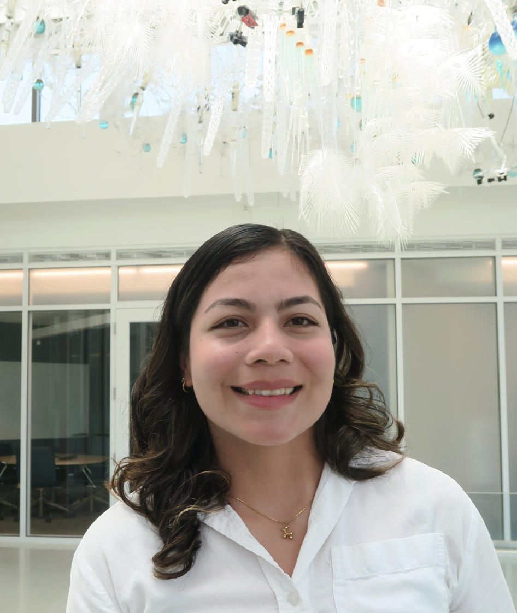

a PhD student in Health Informatics at Indiana University, working with Katie Siek at the Prohealth Lab. My research explores human-centered interactive technologies that support people navigating major life disruptions. I'm particularly interested in ambient interfaces, wearable technologies, and tangible systems that integrate into everyday life. Prior to the PhD, I earned my BA in Computer Science from Berea College in 2024, where I worked with Dr. Jasmine Jones.
